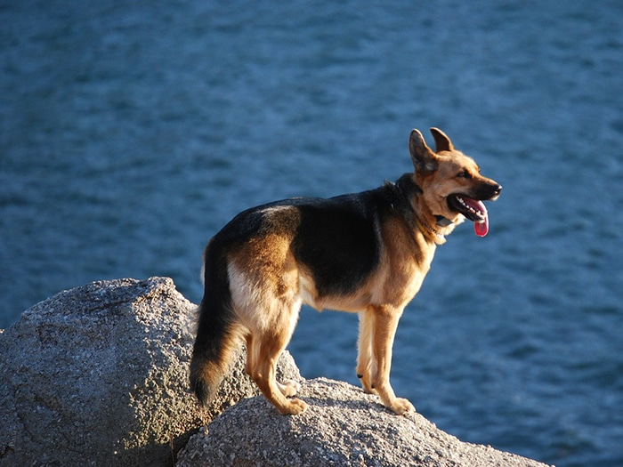

El Pastor alemán, siempre en boga, listo y fácil de adiestrar, es bastante activo y disfruta
cuando tiene algo que hacer. Por ello, necesitan realizar gran cantidad de ejercicio a diario;
de lo contrario,
se vuelven nerviosos o muy excitables.

Informacion mas especifica sobre el pastor aleman.
Rango de peso: - - - - - - - - - - - - - - - - - - Pelo:
Machos: 34 - 43 kg Longitud: medio
Hembras: 34 - 43 kg Características: doble capa
Altura a la cruz: Colores: Están permitidos todos
los colores salvo el blanco
Machos: 64 cm
Reconocimiento de clubes: Necesidad de aseo general: moderada
Hembras: 58 cm
Características:
Orejas erguidas (de forma natural)
Expectativas:
Nivel de energía: medio
Esperanza de vida: 10 - 12 años
Se trata de un perro bien proporcionado. La cabeza es ancha y se estrecha con gracia en un hocico afilado.
Las orejas son bastante largas y se mantienen erguidas. La espalda está nivelada y es musculosa
terminando en una cadera que se curva hacia abajo y en una cola bastante poblada.
El pelo es grueso, duro y áspero presentando generalmente una longitud media, sin embargo,
a menudo nacen ejemplares de pelo largo. El color del pelo puede ser negro, pardo, negro y pardo o gris.